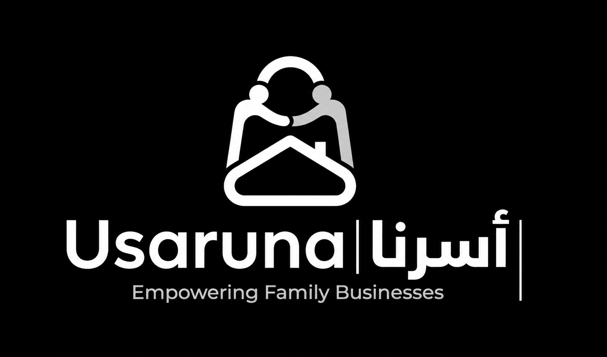

01 / Personal File
About
Bassam Barak
I am an Information Technology student at King Abdulaziz University, currently taking CPIT-455 Software Engineering II.
This portfolio shows my weekly evidence, project work, and how I’m building my understanding step by step through the HIMMA curriculum. I’m still learning, but I’m hungry to improve and prove that I can handle real software engineering problems.
My strongest ability is that when something gets in my way, I do not just stop. Even if I do not know exactly how to solve it at first, I keep searching, testing, asking, and trying until I find a way to get it done. That mindset is what I want this portfolio to show.
Current Focus
Project: Usaruna Platform
Learning: CPIT-455 Software Engineering II
Goal: Build dependable systems people can trust
Student Record
Major Information Technology
Course CPIT-455
Term Spring 2026
Focus Software Developent
Software Architecture
Reliability
Safety Case
Fault Tree Analysis
ALARP
Testing
02 / Evidence Archive
Weekly Evidence
Evidence means clear thinking, not perfection. Each entry is a small proof of learning: a decision, reflection, diagram, test, or argument.
Open Full Evidence ArchiveCLASS 00 - The HIMMA System
For Class 00, my evidence is the HTML portfolio itself. I built the page as a personal space to collect my weekly evidence, project work, and reflection in one organized place. I wanted the design to reflect my own style, so I kept the dark black theme, clean grid layout, fixed sidebar, active section highlight, and smooth scroll animations.
Portfolio System
Full Evidence
Structure
Navigation
Animation
Dark theme / evidence archive / active sidebar
CLASS 01 - Domain Spine: Dependability
I selected a mobile banking system as a dependable real-world system and analyzed the attributes it needs: availability, reliability, security, safety, and resilience. I also identified failure sources such as hardware faults, software bugs, operational mistakes, security threats, and network failures, then proposed testing, backups, monitoring, authentication, and recovery planning.
Mobile Banking System
Full Evidence
Attributes
Risks
Strategy
Availability / Reliability / Security / Safety / Resilience
CLASS 02 - Reliability Engineering
I selected a mobile banking system and defined its usage profile as a high-transaction system used for transfers, bill payments, balance checks, and account services. I chose ROCOF as the main reliability metric because banking systems care about how often failures happen during continuous transactions, while AVAIL is also important for uptime. I proposed redundancy with backup servers and automatic failover so the system can continue working if one server fails.
Reliability Strategy
Full Evidence
ROCOF
AVAIL
Failover
High-transaction banking system / reduce transaction failures
CLASS 03 - Safety Engineering
I selected the Tesla FSD collision avoidance and automatic braking component as a safety-critical system component. The main hazard is that the vehicle fails to detect an obstacle or does not brake in time, which could lead to a collision and serious harm. I assessed the risk using probability and severity, wrote a "shall not" safety requirement, and identified possible causes through a simple fault tree.
Tesla FSD Safety Argument
Full Evidence
Hazard
Risk
Fault Tree
Collision avoidance / automatic braking / fail-safe monitor
GROUP PHASE - Security, Resilience, and Reuse
I created a security assurance case for a mobile banking system. I described the system architecture, identified likely adversaries and misuse cases, explained the defense-in-depth strategy, and listed verification evidence such as penetration testing, static analysis, audit logs, and login monitoring. The goal is to show that the system can withstand expected attacks, not that it is perfectly secure.
Security Assurance Case
Full Evidence
Threats
Controls
Evidence
Defense in depth / monitoring / verification evidence
CLASS 05 - Resilience Engineering
For this resilience case, I used a mobile banking system and analyzed how it can continue working during a transaction service failure. I identified a fault, the resulting internal error, and the visible failure users would experience, then proposed recognition and resistance strategies to keep critical services available. I also applied the Swiss Cheese Model using technical, human, and organizational layers, and explained how human experts step in when automated recovery reaches its limit.
Resilience Engineering
Full Evidence
Failure Chain
R&R
Human Loop
Recognition / resistance / Swiss Cheese layers
CLASS 06 - Software Reuse Strategy
For this reuse strategy, I selected an e-commerce store system and used an Application Framework with COTS/API integration. The reusable core components include user accounts, product catalog, shopping cart, checkout, payment gateway, inventory, order tracking, and notifications. To avoid reuse problems like the Ariane 5 failure, reused components must be validated through integration testing, boundary testing, payment testing, and security checks before deployment.
Software Reuse Strategy
Full Evidence
Core
COTS/API
Validation
Application framework / configurable store components
CLASS 07 - CBSE Strategy
For this CBSE strategy, I used an e-commerce store system and chose Development with Reuse because the system can be built faster by integrating existing components instead of coding everything from scratch. The independent components include product catalog, shopping cart, payment gateway, inventory, shipping API, notification service, and user authentication. I also explained how clear interfaces, integration testing, adaptor components, and validation reduce risks such as component mismatch or payment failure.
CBSE Strategy
Full Evidence
Components
Interfaces
Validation
Development with reuse / adaptor components / integration testing
CLASS 08 - Distributed Architecture Plan
For this distributed architecture plan, I selected an e-commerce store and used a hybrid multi-tier client-server model with distributed backend components. The system is divided into clients, an API gateway, independent services such as product catalog, cart, checkout, payment, inventory, shipping, and notification, plus distributed databases and cloud monitoring. This design supports scalability during peak shopping periods, protects data using HTTPS/TLS, and improves reliability through load balancing, service replication, failover, queues, and cloud-based recovery.
Distributed Architecture
Full Evidence
Gateway
Services
Cloud
Multi-tier client-server / failover / HTTPS-TLS
CLASS 09 - Multi-tier and Middleware Strategy
For this multi-tier and middleware strategy, I selected a multi-tier architecture for the e-commerce store. The system is divided into a presentation tier, application tier, and data tier, with middleware connecting services and managing communication between components. This improves scalability, reduces server overload, and prevents one tier failure from silently collapsing the whole system.
Multi-tier Strategy
Full Evidence
UI
Middleware
Data
Localized control / message queues / API gateway
03 / Project Record
Usaruna Project
Usaruna Platform
Domain: E-commerce Marketplace / Family Businesses
Team Size: 5 members
Usaruna is a web-based e-commerce marketplace that supports productive family businesses in Saudi Arabia. It solves the problem of unorganized selling through WhatsApp and Instagram by giving producers a trusted place to display products, manage orders, receive payments, and reach more customers. Dependability matters because the platform handles user accounts, product data, payments, orders, delivery tracking, and customer trust.

Dependability Metrics
The platform should stay available for customers and producers, especially during peak ordering times.
Orders, payments, product details, and inventory updates must be processed correctly.
The platform should prevent harmful use, such as unsafe or illegal product listings.
Customer data, producer accounts, payments, and admin access must be protected using authentication, encryption, and access control.
The system should recover from payment errors, server issues, database problems, or external service failures without losing order data.
Architecture & Engineering
Software Reuse
The project reuses React, Vite, Tailwind CSS, Node.js, Express.js, Supabase, Moyasar, Google Maps API, and storage services instead of building everything from scratch.
Distributed Architecture
The system is divided into frontend, backend API, database, and external services. React handles the user interface, Node.js/Express handles business logic, Supabase stores data and authentication, and Moyasar/Google Maps support payments and delivery.
Component-Based
The platform is built from independent components such as authentication, product catalog, shopping cart, order management, payment processing, reviews, delivery tracking, notifications, and admin dashboard.
Systems of Systems
Usaruna connects multiple systems together, including the web application, Supabase database/authentication, payment gateway, image storage, Google Maps API, and delivery-related services.
Code Coverage
Testing should cover key workflows such as registration, login, product creation, checkout, payment handling, order status updates, reviews, and admin verification.
Hazard Analysis
Main risks include order completion failure, payment gateway downtime, database connection loss, fake reviews, unsafe product listings, and delivery delays. These are handled using validation, admin moderation, fallback handling, and secure external services.
Project Evidence
- Risk Metric: Availability target, payment/order failure tracking, and secure order completion rate.
- Architecture Pattern: Multi-tier architecture with frontend, backend API, database, and external services.
- Safety Standard: ALARP thinking is applied by reducing high risks such as payment data leaks, unsafe products, and order failures as much as reasonably possible.
- V&V Evidence: Use API testing, checkout testing, payment failure testing, database backup checks, admin moderation testing, and user workflow testing.
04 / Reflection Log
H-Stack Reflection
What changed in how I think?
Before this course, I honestly thought software engineering was mostly about writing documents, diagrams, and formal requirements on paper. After taking CPIT-455 with Dr. Adeeb Noor, my view changed a lot. He showed us the real side of software engineering, not just the textbook side.
What changed for me is that I started to understand that software engineering is about making decisions that affect real people, real systems, and real failures. It is not only about saying "the system shall do this" or drawing diagrams. It is about thinking about what happens when the system breaks, when users make mistakes, when attackers try to abuse it, when the database goes down, or when the project moves from paper into an actual working system.
Dr. Adeeb Noor's way of teaching made the course feel closer to real industry life. Instead of only memorizing definitions, we had to think like engineers: what can fail, how bad is the failure, how do we prove the system is safe, and how do we design it to recover. That changed how I look at software projects.
My biggest V1 to V2 improvement
My biggest improvement from V1 to V2 was understanding that writing about a project is much easier than actually building and improving one. In V1, the project feels clean because everything is still on paper. You can describe the idea, the features, the users, and the architecture in a simple way.
But in V2, when you start thinking about the real implementation, the project becomes much more serious. You begin to notice things you did not fully think about before, like payment errors, database problems, user roles, security rules, order tracking, testing, and how every part of the system depends on another part.
This was honestly humbling. It showed me that having a good idea is only the beginning. The real work is turning that idea into something dependable, usable, and realistic. That lesson helped me respect the software engineering process more.
Safety vs Reliability
The biggest thing I learned about safety and reliability is that they are not the same thing. Before, I used to think if a system works correctly, then it is automatically safe. But this course made me realize that a reliable system can still be unsafe if it does the wrong thing very consistently.
Reliability is about whether the system performs as expected. Safety is about whether the system avoids causing harm. For example, in our project, the platform may reliably process product listings or reviews, but if unsafe products are allowed or fake reviews damage trust, then the system still has a safety problem.
So now I think about safety differently. I do not only ask, "Does the feature work?" I also ask, "Can this feature cause harm if it is misused, fails, or is handled badly?" That is a more mature way to think about software.
What I will carry into my career
What I will carry into my career is the mindset from this course. I learned that a software engineer should not only focus on building features. A real software engineer should think about dependability, safety, security, resilience, reuse, architecture, testing, and how the system behaves when something goes wrong.
I will also carry Dr. Adeeb Noor's way of thinking. He taught us to connect software engineering to real life, not just assignments. Systems are not perfect, users are not perfect, and failures will happen. The important thing is to design with that in mind.
This course made me understand that good engineering is not about pretending everything will work. It is about preparing for what can go wrong and still building systems that people can trust.
05 / Contact Channel
Contact
Use professional contact methods only. Do not include private phone numbers or home addresses.